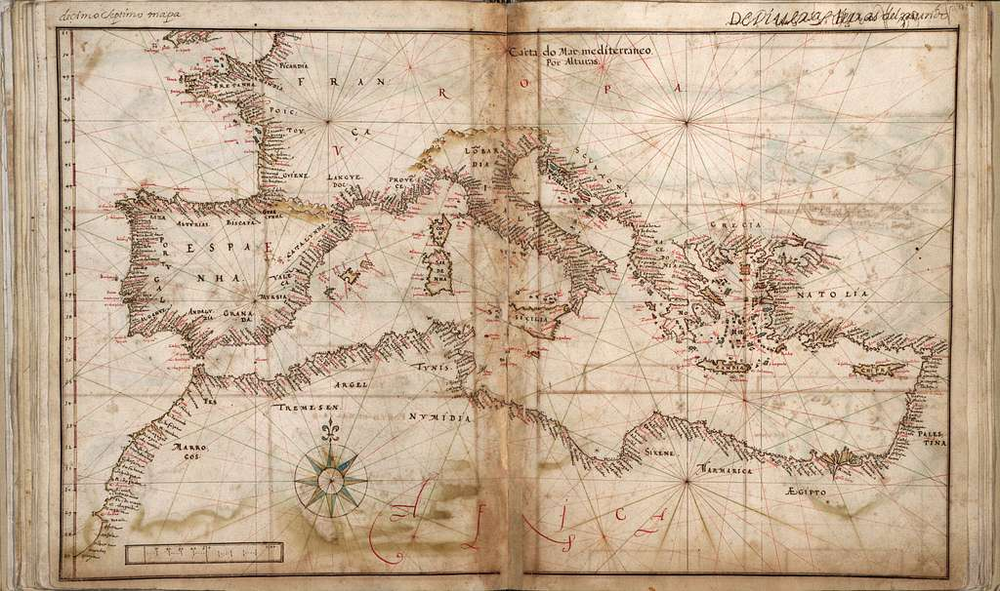

Helm charts
Nautical charts - called Helm charts where used to navigate vessels in open waters
What are Helm charts?¶
Helm is a package manager for Kubernetes. When deploying an application on K8s, you need to have not only the pod-spec and the deployment-spec, but also YAML files that describe the stateful-set, ConfigMap, user permissions, secrets, services etc. Helm charts package up all these commonly used YAML files as charts and shares it as standard sets. This bundle of YAML files are called Helm charts.
Commonly used apps such as DB apps (Mongo, PostGRES), monitoring apps such as Prometheus all have commonly available Helm charts. Today there are repositories of such charts that are both public and private.
Helm as a templating engine¶
Helm is also a templating engine. Consider an application with multiple micro-services. The spec for each of these are usually identical except for metadata. With Helm, you can define a common blueprint called a template or tpl file and associate it with one or more values.yaml file that contains the specific info for each service.
For example, you may have to deploy the same service on dev, staging and prod. The spec for these clusters might be identical except for some key, but uniform differences. Thus you can have Helm charts such as the one shown below:
deployment_tpl.yaml
apiVersion: v1 kind: Pod metadata: name: {{.Values.name}} spec: containers: - name: {{.Values.container.name}} image: {{.Values.container.image}} port: {{.Values.container.port}}
and values for each env as shown below: dev.values.yaml
name: my-app-dev container: name: cont1 image: gcr.io/cont1img1 port: 5000
This ensures the deployment on each cluster is identical.
Helm chart structure¶
A Helm chart is usually a folder with the following files:
myChart/
Chart.yaml # Metadata about the chart
templates/ # Folder with Helm template files
values.yaml # Values for the template files
charts/ # Folder for any chart dependencies. If the main chart depends on other charts.
readme.md # optional
license # optional
These files are deployed using the command: helm install <chartname>